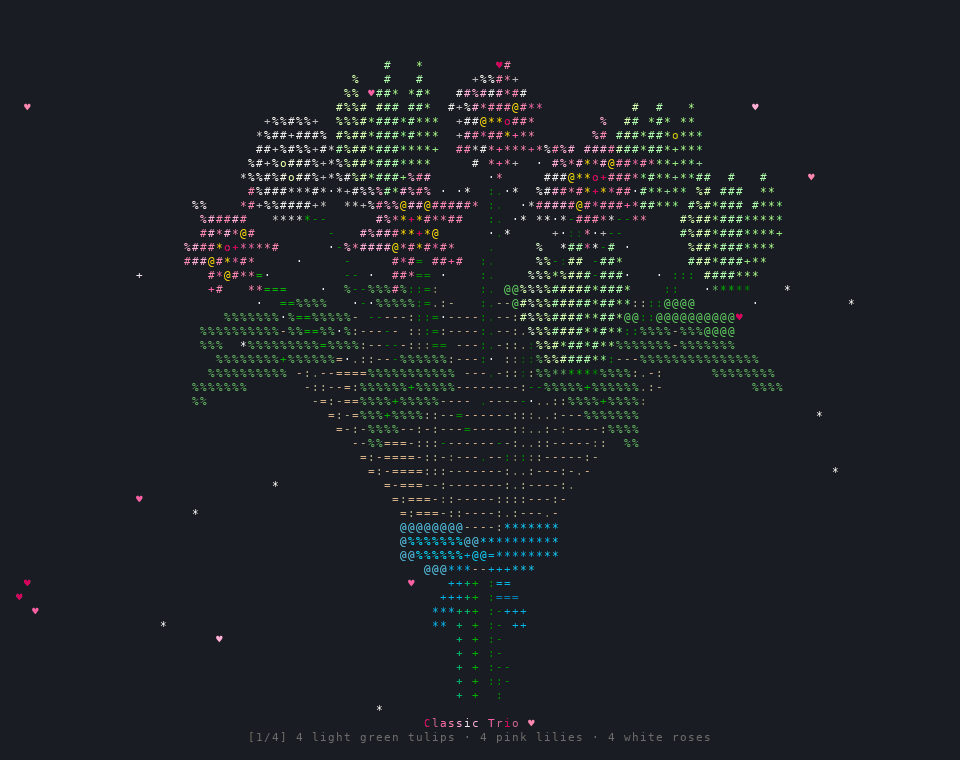

A little garden in pixels
Flower Bouquets
Four arrangements of tulips, lilies, and roses, tied with a blue ribbon. Choose a bouquet or let the gallery cycle through them.

Classic Trio
4 light green tulips · 4 pink lilies · 4 white roses
A little garden in pixels
Four arrangements of tulips, lilies, and roses, tied with a blue ribbon. Choose a bouquet or let the gallery cycle through them.

4 light green tulips · 4 pink lilies · 4 white roses